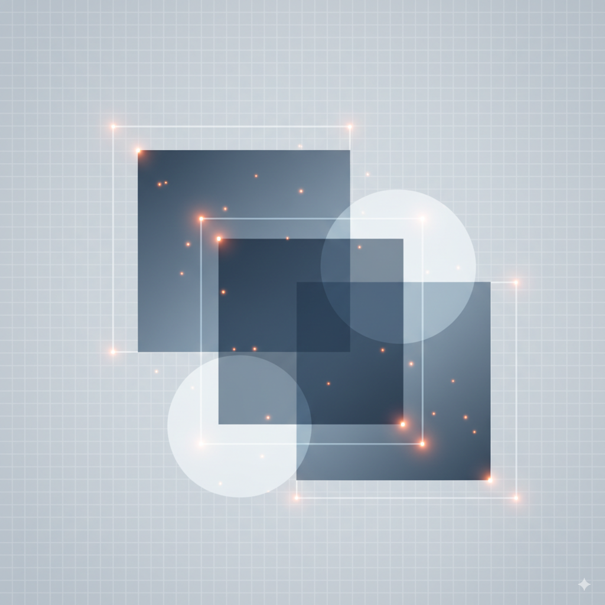

Faster R-CNN: A Deep Dive into the Model that Revolutionized Object Detection

The family of R-CNN models marked a turning point for object detection, but speed remained a critical issue. The culprit? The slow, external systems used for generating region proposals. The Faster R-CNN paper, which we’ll explore in detail, presented an elegant and powerful solution: the Region Proposal Network (RPN). This innovation integrated region proposals directly into the neural network, paving the way for the first truly end-to-end, real-time object detector. Join us as we break down this seminal work, one section at a time.
{kind=link}
Let’s break down exactly how they did it, section by section.
Abstract
{kind=link}
Unpacking the Story
The abstract tells a compelling story about a critical bottleneck in computer vision and the elegant solution that smashed through it. Let’s walk through the narrative.
The Context: The R-CNN Family and the Emerging Bottleneck
To understand the genius of Faster R-CNN, we need to know the story of its predecessors. Object detection using deep learning was popularized by R-CNN. The original R-CNN worked in a multi-stage process:
- Propose Regions: Use an external, traditional computer vision algorithm (like Selective Search) to generate about 2,000 “region proposals”—bounding boxes that might contain an object.
- Extract Features: For each of these 2,000 proposals, warp the image patch and feed it through a Convolutional Neural Network (CNN) to extract features.
- Classify: Use a classifier (an SVM) to decide what object is in each feature patch.
This was incredibly slow because it ran a CNN 2,000 times per image!
The next major innovations, SPPnet and its successor Fast R-CNN, dramatically sped this up. Their key insight was to run the entire image through the deep CNN only once to get a single, rich feature map. Then, they would project the region proposals onto this feature map and use a special pooling layer (SPP or RoI Pooling) to extract features for each proposal. This was a monumental speedup.
But, as the abstract states, these advances “exposed region proposal computation as a bottleneck.” The CNN part was now blazingly fast, but the model still had to wait for the slow, CPU-based Selective Search algorithm to generate proposals. The detection network was running on a powerful GPU, while the proposal mechanism was chugging along on the CPU. It was like putting a lawnmower engine in a Formula 1 car.
The Solution: The Region Proposal Network (RPN)
This is the core contribution of the paper. Instead of treating region proposals as an external, pre-processing step, the authors asked: “Can the network itself generate the proposals?”
The answer was the Region Proposal Network (RPN). The key ideas are:
- Feature Sharing: The RPN doesn’t need its own separate deep network. It plugs directly into the main detection network and shares the same convolutional features. This is why the authors call it “nearly cost-free”—the heavy lifting of feature extraction is already done.
- Fully Convolutional: The RPN is a small, efficient network that slides over the feature map produced by the backbone (like VGG-16). At each location, it outputs two things:
- Objectness Score: The probability that a box at this location actually contains any object (as opposed to background).
- Object Bounds: A regression prediction to refine the coordinates of the bounding box.
The Unified System: An “Attention” Mechanism
The final step is to merge the RPN with the Fast R-CNN detector. This creates a single, unified network. The authors beautifully frame this using the concept of attention. In neural networks, an attention mechanism is a component that allows the model to dynamically focus on the most relevant parts of the input.
In this context, the RPN acts as the attention mechanism for the detector. It quickly scans the entire image’s feature map and tells the Fast R-CNN component, “Pay attention to these specific regions; they are the most likely to contain objects.”
The Proof: Speed and Accuracy
The results speak for themselves. The unified Faster R-CNN system achieved 5 frames per second (fps), a huge leap towards real-time performance, while also setting a new state-of-the-art accuracy on major benchmarks. Its dominance in top competitions solidified its place as the new gold standard for object detection.
1. Introduction
Setting the Stage: The Object Detection Bottleneck
{kind=link}
The authors open by establishing the dominant paradigm in object detection at the time: a two-stage approach. Let’s break this down.
Stage 1: Region Proposal Methods Imagine you’re trying to find all the objects in a room. Before you can identify each object, you first need to just… notice them. You need to separate potential “things” from the background wallpaper. This is what region proposal methods do for a computer vision model. Algorithms like Selective Search [4] would scan an image and generate a few thousand candidate bounding boxes—or “proposals”—that were likely to contain an object, based on low-level features like color, texture, and edges. This is a class-agnostic process; it doesn’t know what the objects are, only where they might be.
Stage 2: Region-Based CNNs (R-CNNs) Once you have these proposals, you need to classify them. This is the job of a region-based convolutional neural network, a family of models kicked off by the original R-CNN [5]. The initial R-CNN approach was simple but brute-force: it took every single one of the ~2000 proposals from Selective Search and fed each one through a powerful CNN. While effective, this was incredibly slow and could take nearly a minute per image.
The authors then reference the key optimization that changed the game: sharing convolutions. This was the central idea behind SPPnet [1] and Fast R-CNN [2]. Instead of running a CNN 2000 times, they ran the CNN just once on the entire image to create a single, powerful feature map. The region proposals were then applied to this feature map to pool features for each region. This was a massive speedup, making the CNN part of the detector “near real-time.”
But here, the authors deliver the crucial punchline: “…when ignoring the time spent on region proposals.” By making the CNN so efficient, they revealed a new, glaring bottleneck. The object detector was now a hybrid system: a fast, GPU-based deep learning classifier was being fed by a slow, CPU-based classical computer vision algorithm (Selective Search). The proposal stage, once a minor part of the total computation time, was now the dominant bottleneck.
This single paragraph masterfully sets the stage. It defines the problem not just as “object detection is slow,” but with surgical precision: “the region proposal part of object detection is the bottleneck.” And that is exactly the problem Faster R-CNN sets out to solve.
Quantifying the Problem: The Cost of Traditional Proposals
{kind=link}
Here, the authors dissect the nature of the problem. They explain that methods like Selective Search were designed to be “economical” in a world before deep learning dominated. They use “engineered low-level features”—this is a key term. It means that instead of learning features from data, human experts designed algorithms to extract features based on things like:
- Color similarity: Grouping pixels of a similar color.
- Texture: Finding patterns like stripes or dots.
- Shape and size: Merging smaller regions into larger, more coherent shapes.
Selective Search, for instance, works by starting with tiny pixel clusters (superpixels) and greedily merging adjacent clusters that are most similar. It’s a clever, bottom-up approach, but it’s computationally intensive and fundamentally disconnected from the deep learning architecture.
The paper then puts hard numbers to the problem:
- Selective Search: Takes a whopping 2 seconds per image on a CPU. A modern GPU can process dozens of images in that time.
- EdgeBoxes: A faster alternative that focuses on object contours, providing a better speed/quality tradeoff at 0.2 seconds (or 200 milliseconds) per image.
While EdgeBoxes is 10x faster than Selective Search, the authors make a critical point: even 200ms is too slow. The highly optimized Fast R-CNN detector also takes about 200ms to do its job. This means that at best, the system spends 50% of its time just generating proposals. The promise of “real-time” detection is impossible when half the pipeline is stuck in the slow lane.
This paragraph elegantly dismisses the idea of simply finding a slightly faster traditional proposal method. The problem isn’t that Selective Search is a bad algorithm; the problem is that the entire paradigm of using an external, CPU-bound proposal algorithm is flawed in the era of fast, GPU-based detectors. A more fundamental, integrated solution is required.
An Algorithmic Change, Not Just an Engineering Fix
In the following paragraph, the authors anticipate and dismantle a seemingly obvious solution before presenting their own, far more elegant approach.
{kind=link}
The authors first address the elephant in the room: the CPU vs. GPU disparity. A fair critique of the speed comparison is that it’s an apples-to-oranges comparison. What if we just ported Selective Search or EdgeBoxes to run on a GPU? Wouldn’t that solve the problem?
The authors’ response is brilliant. They concede this might work—calling it an “effective engineering solution”—but they argue it’s intellectually unsatisfying and inefficient. Why? Because it “misses important opportunities for sharing computation.”
Think of it like this: The Fast R-CNN backbone (e.g., VGG-16) has already done the incredibly hard work of processing the entire image and creating a high-level map of abstract features—it knows where the edges, textures, and parts of objects are. A separate, GPU-based Selective Search would completely ignore this rich feature map and start from scratch, looking at the raw pixels again. This is fundamentally wasteful.
This is the intellectual leap of the paper. The solution isn’t just to make the old methods faster; it’s to change the algorithm entirely. The authors propose the Region Proposal Network (RPN), a small neural network designed specifically for this task.
The genius of the RPN is that it doesn’t start from scratch. It builds directly on top of the shared convolutional feature map that the detector network already created. Because the most computationally expensive part is already done, the extra work required to generate proposals is minimal. The authors quantify this “marginal cost” at a mere 10 milliseconds, a 20x improvement over the fastest alternative (EdgeBoxes). This isn’t just an optimization; it’s a paradigm shift that integrates the proposal mechanism directly into the deep learning pipeline, making it almost free.
The Core Idea: Turning Feature Maps into Proposals
{kind=link}
This section explains the simple, powerful observation at the heart of the paper. The authors realized that the feature map produced by a network like VGG-16 isn’t just a jumble of numbers; it’s a rich, spatially-aware summary of the image. Each point on this feature grid corresponds to a specific patch of the input image and contains high-level information about what’s in that patch. They hypothesized that these same features, which are great for classifying objects, are also perfect for proposing where objects might be.
Based on this insight, they designed the RPN to be a small, lightweight “head” that attaches to the main network’s body. Here’s how it works:
- Input: It takes the final feature map from the shared convolutional layers as its input.
- Architecture: It consists of just a few extra convolutional layers that slide across this feature map. Because it only uses convolutional layers and no dense, fixed-size layers, it’s a Fully Convolutional Network (FCN). This is a key design choice that allows it to efficiently process the feature map in a single pass, regardless of the input image’s size.
- Dual Outputs: At every single location on the feature map, this sliding network performs two tasks simultaneously:
- Classification: It predicts an “objectness score.” This is a simple binary classification: does this location correspond to a foreground object, or is it just background?
- Regression: It “regresses region bounds.” For locations that it thinks contain an object, it predicts four values that refine the coordinates (
x, y, width, height) of the bounding box.
Crucially, because the RPN is built with standard neural network layers, it can be “trained end-to-end.” This means the network learns the optimal way to propose regions directly from the data, guided by the final object detection loss. Unlike Selective Search, which is a fixed, handcrafted algorithm, the RPN is a flexible learner that gets better at its job during training.
The Multi-Scale Challenge and the “Anchor” Box Solution
A critical challenge in object detection is that objects appear in an image with a huge variety of sizes (scales) and shapes (aspect ratios). A car far away is small, while a car up close is large. A standing person is tall and thin, while a boat is wide and short. How can a network handle this efficiently?
The authors first lay out the two conventional, but inefficient, ways to solve this problem, as shown in Figure 1.
RPNs are designed to efficiently predict region proposals with a wide range of scales and aspect ratios. In contrast to prevalent methods [8], [9], [1], [2] that use pyramids of images (Figure 1, a) or pyramids of filters (Figure 1, b), we introduce novel “anchor” boxes that serve as references at multiple scales and aspect ratios. Our scheme can be thought of as a pyramid of regression references (Figure 1, c), which avoids enumerating images or filters of multiple scales or aspect ratios. This model performs well when trained and tested using single-scale images and thus benefits running speed.
{kind=link}
The Old Way 1: Image Pyramids (Figure 1a) This is the most straightforward, brute-force approach. You take the input image, resize it multiple times (e.g., a small, medium, and large version), and run your detector on each resized image. If you’re looking for a small object, it will be easier to find in the upscaled image. If you’re looking for a large object, the downscaled image is sufficient. The problem? You’ve just multiplied your computation time by the number of scales you use. It works, but it’s very slow.
The Old Way 2: Filter Pyramids (Figure 1b) This is a slightly more efficient approach. You create a single feature map from your image. Then, you slide filters (or “windows”) of multiple sizes across this feature map. For example, you might use a small 3x3 filter, a medium 5x5 filter, and a large 7x7 filter to detect objects of different sizes. This is better than an image pyramid, but it can still be computationally expensive and complex to manage filters of varying sizes.
The Faster R-CNN Way: A Pyramid of Anchors (Figure 1c) This is the paper’s brilliant and highly efficient solution. Instead of resizing the image or using multiple filter sizes, they introduce the concept of anchor boxes.
An anchor box is a pre-defined reference bounding box with a specific scale and aspect ratio.
Here’s the key idea: At every single location on the final convolutional feature map, the RPN places a set of these anchor boxes. For example, it might place 9 anchor boxes:
- 3 scales (e.g., small, medium, large)
- 3 aspect ratios (e.g., 1:1 square, 1:2 tall, 2:1 wide)
The RPN then doesn’t have to predict a bounding box from scratch. Instead, for each of these 9 anchors at each location, it just asks two simple questions:
- Classification: What is the probability that this anchor contains a real object?
- Regression: How do I need to slightly adjust the position and size of this anchor to make it fit the real object perfectly?
The authors call this a “pyramid of regression references.” This is a beautiful analogy. The “pyramid” of different scales and shapes isn’t built by creating new images or new filters; it’s a virtual pyramid of reference boxes that exists at every feature map location. This allows the entire system to operate on a single-scale image and a single-scale feature map, which is the primary reason for its incredible speed.
The Chicken-and-Egg Problem: Training a Unified Network
The RPN and the Fast R-CNN detector are separate components, but they are designed to share a single “body” of convolutional layers. This creates a tricky training challenge:
- To learn how to propose good regions, the RPN needs a rich feature map.
- To learn how to create a rich feature map, the Fast R-CNN detector needs good region proposals.
It’s a classic chicken-and-egg problem. If your initial proposals are random garbage, your detector won’t learn anything useful, and its features won’t improve. If your initial features are poor, your RPN will only propose garbage. The authors propose a pragmatic solution to break this cycle.
{kind=link}
Their solution is a clever alternating training scheme. Instead of trying to train both network heads at once (which could be unstable), they have them take turns teaching each other. The process, which is detailed later in the paper, works roughly like this:
- Train the RPN: First, train the RPN to learn the basics of proposing objects. This also fine-tunes the shared convolutional layers to be somewhat good at this task.
- Train the Detector: Use the proposals generated by the just-trained RPN to train the Fast R-CNN detector. This fine-tunes the shared layers again, this time optimizing them for classification accuracy.
- Re-train the RPN: Now that the shared layers are better, go back and re-train only the unique layers of the RPN. It now has access to a more powerful feature map and can learn to generate even better proposals.
- Re-train the Detector: Finally, using the improved proposals, re-train the unique layers of the Fast R-CNN detector one last time.
By the end of this process, both components have converged, and you are left with a single, highly-optimized network where the shared convolutional layers are effective for both proposing regions and classifying the objects within them.
(As a side note, the paper’s footnote mentions that they later found a simpler “joint training” method was also effective and is now more common, but this alternating approach was the original, robust method that proved the concept.)
The Proof and the Payoff: A New State of the Art
We comprehensively evaluate our method on the PASCAL VOC detection benchmarks [11] where RPNs with Fast R-CNNs produce detection accuracy better than the strong baseline of Selective Search with Fast R-CNNs. Meanwhile, our method waives nearly all computational burdens of Selective Search at test-time—the effective running time for proposals is just 10 milliseconds. Using the expensive very deep models of [3], our detection method still has a frame rate of 5fps (including all steps) on a GPU, and thus is a practical object detection system in terms of both speed and accuracy…
In ILSVRC and COCO 2015 competitions, Faster R-CNN and RPN are the basis of several 1st-place entries [18]… These results suggest that our method is not only a cost-efficient solution for practical usage, but also an effective way of improving object detection accuracy.
Having laid out the problem and the proposed solution, the authors conclude the introduction by summarizing the evidence. The key takeaways are:
- Higher Accuracy: On the standard PASCAL VOC benchmarks, the Faster R-CNN system was not just faster, but also more accurate than the previous state-of-the-art (Fast R-CNN with Selective Search). This proves that the learnable RPN is superior to handcrafted proposal algorithms.
- Radical Speedup: The system achieves 5 frames per second (fps). While not blazing-fast by modern standards, this was a massive leap forward, crossing the threshold into what the authors call a “practical object detection system.” It made near real-time applications feasible for the first time.
- Proven in the Field: The ultimate validation came from its dominant performance in the most prestigious computer vision competitions of the time, ILSVRC and COCO. The fact that many first-place winners built their systems on Faster R-CNN and RPNs cemented their status as the new industry standard.
- A Foundation for Future Work: The authors note that the RPN framework is flexible and has been generalized to other complex computer vision tasks like instance segmentation and 3D object detection. This hints at the true power of the idea: it’s not just a single model, but a foundational component for perception systems.
Perhaps the most important long-term advantage is that because the RPN learns its features, it automatically benefits from more powerful backbone networks. As CNNs got deeper and more expressive (e.g., with the introduction of ResNet), the performance of Faster R-CNN continued to improve, while the performance of static methods like Selective Search remained fixed. This “future-proof” quality is a key reason for its enduring impact on the field.
{kind=link}
{kind=link}
3. Faster R-CNN: A Unified Architecture
The Two-Module System
Our object detection system, called Faster R-CNN, is composed of two modules. The first module is a deep fully convolutional network that proposes regions, and the second module is the Fast R-CNN detector [2] that uses the proposed regions. The entire system is a single, unified network for object detection (Figure 2). Using the recently popular terminology of neural networks with ‘attention’ [31] mechanisms, the RPN module tells the Fast R-CNN module where to look.
At its core, the Faster R-CNN architecture is a brilliant marriage of two distinct modules that work in harmony: a Region Proposal Network (RPN) and a Fast R-CNN detector. The genius lies in how they are unified into a single, end-to-end network, as illustrated in the data flow of Figure 2.
{kind=link}
{kind=link}
Let’s walk through the process step-by-step:
Shared Feature Extraction: The process begins with a standard deep CNN backbone (like a VGG-16 or a ResNet). The input image is passed through this backbone only once to produce a high-level, spatially rich feature map. This is the most computationally intensive step, and crucially, it is shared by both modules.
The RPN Module (The “Where”): This feature map is then fed into the RPN. The RPN’s sole job is to look at this map and generate a set of high-quality region proposals. It slides across the feature map and, at each location, effectively asks, “Is there an object here? If so, what is its rough size and shape?” The output is a list of coordinates for boxes that likely contain objects.
The Fast R-CNN Module (The “What”): Now, the Fast R-CNN detector takes over. It receives two inputs:
- The original feature map from the backbone.
- The region proposals generated by the RPN.
Using a mechanism called RoI Pooling, the detector extracts a small, fixed-size feature vector from the map for each proposal. These feature vectors are then fed into fully connected layers that perform the final tasks:
- Classification: Assigning a specific class label (e.g., “person,” “cat,” “car”) to each proposal.
- Bounding Box Regression: Making fine-tuned adjustments to the proposal’s coordinates to more tightly enclose the detected object.
The authors provide the perfect analogy for this system: the RPN acts as an attention mechanism. It performs a quick, efficient scan of the entire image’s features to identify a small set of interesting regions, thereby directing the “attention” of the more powerful (and computationally expensive) classifier to only the parts of the image that matter most.
This unified design, with its shared convolutional backbone, is the secret to Faster R-CNN’s efficiency. The expensive feature extraction is done once, and the lightweight RPN generates proposals almost for free.
3.1 Region Proposal Networks
The RPN Architecture: A Sliding Window Detector
A Region Proposal Network (RPN) takes an image (of any size) as input and outputs a set of rectangular object proposals, each with an objectness score.³ … Because our ultimate goal is to share computation with a Fast R-CNN object detection network [2], we assume that both nets share a common set of convolutional layers. In our experiments, we investigate the Zeiler and Fergus model [32] (ZF), which has 5 shareable convolutional layers, and the Simonyan and Zisserman model [3] (VGG-16), which has 13 shareable convolutional layers.
The authors begin by formally defining the RPN’s role: it’s a fully convolutional network whose job is to produce rectangular proposals. Each proposal comes with an objectness score, which is a crucial concept. This score does not say “this is a cat” or “this is a car.” It is class-agnostic. It simply estimates the probability that a proposal contains any kind of foreground object versus being just background.
The key design principle, reiterated here, is that the RPN doesn’t exist in a vacuum. It’s designed to be a lightweight “head” that sits on top of a deep, pre-existing feature extractor like the VGG-16 network. This feature-sharing is the foundation of the system’s efficiency.
Inside the RPN: A Mini-Network for Proposals
The paper then describes the elegant mechanism at the heart of the RPN.
To generate region proposals, we slide a small network over the convolutional feature map output by the last shared convolutional layer. This small network takes as input an n × n spatial window of the input convolutional feature map. Each sliding window is mapped to a lower-dimensional feature… This feature is fed into two sibling fully-connected layers—a box-regression layer (reg) and a box-classification layer (cls)… This architecture is naturally implemented with an n×n convolutional layer followed by two sibling 1 × 1 convolutional layers (for reg and cls, respectively).
Conceptually, you can think of the RPN as a tiny network that slides over every location of the shared feature map. In this paper, they use a 3x3 window:
- Sliding Window: At a single location on the feature map (e.g., a map of size 14x14x512), the RPN looks at a 3x3 neighborhood of feature vectors. This 3x3 patch contains spatial context about a specific region of the original image.
- Intermediate Layer: This 3x3 patch of features is first processed by a convolutional layer, creating an intermediate feature vector (e.g., 512-dimensional for VGG). This vector is a compact summary of the spatial features in the window.
- Sibling Output Layers: This single summary vector is then fed into two parallel, separate layers (called “sibling” layers):
- Classification Layer (
cls): This layer outputs the “objectness” score. - Regression Layer (
reg): This layer outputs four numbers that represent the coordinate adjustments (x, y, w, h) needed to refine the bounding box.
- Classification Layer (
The authors then provide a crucial implementation detail. While it’s easy to think of this as a sliding mini-network, it’s actually implemented far more efficiently. The “3x3 sliding window” is simply a standard 3x3 convolutional layer. The two “sibling fully-connected layers” that operate on the output are then implemented as two parallel 1x1 convolutional layers. This fully convolutional design is extremely fast to run on a GPU and can process the entire feature map in one forward pass.
3.1.1 Anchors: The Core of Multi-Scale Detection
At each sliding-window location, we simultaneously predict multiple region proposals, where the number of maximum possible proposals for each location is denoted as k. So the reg layer has 4k outputs encoding the coordinates of k boxes, and the cls layer outputs 2k scores that estimate probability of object or not object for each proposal⁴. The k proposals are parameterized relative to k reference boxes, which we call anchors. An anchor is centered at the sliding window in question, and is associated with a scale and aspect ratio (Figure 3, left). By default we use 3 scales and 3 aspect ratios, yielding k = 9 anchors at each sliding position. For a convolutional feature map of a size W × H (typically ~2,400), there are WHk anchors in total.
{kind=link}
This paragraph answers the critical question: how can a single 3x3 sliding window predict objects of wildly different sizes and shapes? The answer is that it doesn’t predict just one box; it predicts multiple boxes simultaneously.
The key innovation is the anchor box. An anchor is a pre-defined bounding box, or a “template,” with a fixed scale (e.g., 128x128 pixels) and aspect ratio (e.g., 1:1 for a square).
Here’s the workflow at a single position of the sliding window on the feature map:
- Place Anchors: The system places
kof these anchor boxes, centered at the window’s location. The paper’s default setup usesk=9anchors (3 different sizes multiplied by 3 different shapes: tall, wide, and square). - Predict Relative to Anchors: The RPN’s sibling layers then make predictions for each of the k anchors.
- The
clslayer outputs2kscores. For each of thekanchors, it produces two scores representing the probability of “object” vs. “not object.” - The
reglayer outputs4kvalues. For each of thekanchors, it predicts four small adjustments (deltas) to refine itsx, y, width,andheight. The network isn’t learning to find a box from scratch; it’s learning to slightly nudge a good template into a great position.
- The
This design is incredibly efficient. Instead of running different networks or filters for different shapes, a single network pass produces predictions for a wide variety of object types. The final sentence drives this home: for a typical image, the feature map might be around 60x40. With k=9 anchors at each spot, the network is densely evaluating 60 * 40 * 9 = 21,600 potential object locations of varying shapes and sizes in a single, parallelized forward pass.
Translation-Invariant Anchors: A Key Advantage
{kind=link}
The authors make two powerful arguments here for why their anchor design is superior to competing methods like MultiBox, both stemming from the property of translation invariance.
1. A More Robust Prediction Scheme
So, what is translation invariance? In simple terms, it means that if an object moves (is “translated”) in an image, the detection system should react in the exact same way. If the network can detect a cat on the left side of an image, it should be equally capable of detecting the same cat if it appears on the right side.
How RPN Achieves This: The RPN’s design guarantees this property. The set of
k=9anchor shapes is the same at every single sliding-window location. Furthermore, because the prediction layers are convolutions, the same function (the same set of learned weights) is used to make predictions at every location. If the network learns a function that says “when you see features that look like a cat’s head, predict an object here and adjust the anchor like this,” that function is applied uniformly across the entire image.The Flaw in MultiBox: The authors contrast this with MultiBox, which used k-means clustering on the training data’s ground-truth boxes to generate a fixed set of 800 anchors. These anchors are not translation-invariant. They are tied to absolute positions and sizes learned from the dataset’s statistics. For example, anchor #52 might be a “car-shaped box in the lower-center of the image,” because that’s where many cars appeared in the training set. If a car appears in the top-left corner during testing, anchor #52 is useless. MultiBox is not guaranteed to generate the same quality proposal if the object moves, making it less robust.
2. A Dramatically Smaller and More Efficient Model
This property also has a massive practical benefit: it drastically reduces the number of parameters the network needs to learn.
MultiBox: With its 800 fixed anchors, the output layer needs to predict
(4 coordinates + 1 objectness score) * 800 anchors= 4000 values. Since this is a fully-connected layer, the number of weights is enormous, scaling with the size of the input features. The paper calculates this to be 6.1 million parameters.RPN: With its
k=9anchors, the output layers predict(4 coordinates + 2 objectness scores) * 9 anchors= 54 values at each location. But because these are convolutional layers, the weights are shared across all locations. The network doesn’t need separate parameters for the top-left and bottom-right of the image. It only needs to learn the weights for the small convolutional filters. The paper calculates this to be just 28,000 parameters.
This is a staggering difference—the RPN’s output layers are over 200 times smaller! This efficiency means the model is faster to train, requires less memory, and, as the authors conclude, is far less likely to overfit. Overfitting is the risk of a model simply memorizing the training data instead of learning a generalizable rule. A smaller, more constrained model is forced to learn more robust and useful features, which is particularly important for smaller datasets like PASCAL VOC.
Multi-Scale Anchors as Regression References: An Elegant Solution
{kind=link}
Here, the authors formalize the comparison we saw in Figure 1, placing their anchor-based method in direct contrast with the two prevalent, but costly, paradigms for handling objects of varying sizes.
The Old, Inefficient Paradigms:
- Image/Feature Pyramids: This brute-force method, used by classic models like the Deformable Part Model (DPM) and even early deep learning models, involves resizing the input image multiple times and computing features for each scale. It’s effective because it guarantees you’ll have a version of the image where the object of interest is at an ideal size, but it’s incredibly time-consuming.
- Filter Pyramids: This method uses a single feature map but slides multiple filters of different sizes and shapes over it. For example, a tall, thin filter might be used to find pedestrians, while a wide, short filter finds cars. This is more efficient than an image pyramid but still requires designing, training, and running multiple specialized filters.
The New, Cost-Efficient Paradigm: A Pyramid of Anchors The RPN’s anchor-based method cleverly sidesteps the costs of the old paradigms. It achieves multi-scale detection while adhering to three critical efficiency principles:
- It processes an image of a single scale.
- It computes a feature map at a single scale.
- It uses a sliding window (filter) of a single size (3x3).
Instead of making the inputs or the filters multi-scale, it makes the references multi-scale. At each location, the network doesn’t just ask, “Is there an object here?” It asks a much more specific set of questions: “Is there a large, square object here?”, “Is there a small, wide object here?”, “Is there a medium, tall object here?”, and so on for all k anchors. The network’s job is simply to classify (“yes/no”) and refine these pre-defined reference boxes.
The final sentence of the paragraph is the ultimate takeaway. This anchor design is the “key component for sharing features without extra cost for addressing scales.” It’s the critical innovation that allows the network to handle the complexity of the real world (objects of all shapes and sizes) without sacrificing the massive speed benefits of the single-pass, feature-sharing architecture pioneered by Fast R-CNN.
We are now ready to dive into the loss function that makes training this system possible.
Putting It All Together: The Faster R-CNN Architecture
The architecture can be broken down into three main stages:
Stage 2: The RPN (The “Where” Module)
- As Seen in the Diagram: This is the top-right block, labeled “Region Proposal Network.”
- The Process: The shared feature map is fed into the RPN. The RPN’s own small convolutional network effectively slides across this feature map.
- At each location, a set of
kanchor boxes with different scales and aspect ratios are conceptually placed. - This information is then passed to two sibling 1x1 convolutional layers:
Conv_class(the classification head) outputs the binary “objectness” score for each anchor.Conv_bbr(the bounding box regression head) outputs the 4 coordinate refinements for each anchor.
- At each location, a set of
- The Output: The RPN produces a set of high-quality, class-agnostic proposals—what the diagram calls “Object-like regions proposed in feature map.”
Stage 3: The Detector Head (The “What” Module)
- As Seen in the Diagram: This is the bottom-right block, labeled “Fast RCNN.”
- The Process: This stage takes two inputs: the original shared feature map and the proposals from the RPN.
- For each proposed region, the RoI (Region of Interest) Pooling layer extracts a small, fixed-size feature vector from the shared feature map. This is a critical step because the subsequent fully-connected layers require a consistent input size, even though the proposals themselves are all different sizes.
- These fixed-size feature vectors are then passed through several Fully-Connected (FC) layers, which perform the final, high-level reasoning.
- Finally, two sibling output layers produce the final result for each region:
- A Softmax layer performs multi-class classification, assigning a specific label like “person,” “cat,” or “background.”
- A Bounding box regressor performs a final, precise coordinate refinement for the classified object.
This clear, three-stage process—extract features once, propose where objects are, and finally classify what they are—is the essence of Faster R-CNN’s elegant and efficient design.
If we look at the output of the RPN, it generates a large number of proposals. There is a sliding window over the feature map, and at each location, it generates k proposals (where k is the number of anchors). For a typical feature map size of W x H, this results in W * H * k proposals. Many of these proposals will correspond to background regions with no objects. So, how does the system filter out these background proposals before passing them to the Fast R-CNN detector?
That is an absolutely essential question, and it gets to the heart of how the RPN makes the whole system efficient. You are correct: the RPN generates a massive number of raw predictions (e.g., ~60 x 40 x 9 = 21,600 for a typical image), but the detector only needs a few hundred.
There is a crucial filtering and refinement process that happens between the RPN’s raw output and the detector’s input. This process acts like a funnel, intelligently reducing the thousands of candidates down to the ~300 most promising ones.
Here are the steps involved:
Step 1: Apply Box Regression Deltas
First, the raw 4k regression outputs from the RPN are not absolute coordinates. They are small adjustments (deltas) in x, y, width, height relative to the anchor boxes. The first step is to apply these deltas to the WHk anchor boxes to get the actual coordinates of all the potential proposals.
Step 2: Clip Proposals to Image Boundaries
Many of the resulting proposals, especially those from anchors near the edge of the image, may now exceed the image boundaries. These boxes are clipped so that they fit entirely within the image.
Step 3: Remove Low-Confidence Proposals
Each of the WHk proposals has an “objectness score” from the RPN’s classification layer. The vast majority of these will correspond to background and will have very low scores. A simple and effective first filter is to discard any proposal with an objectness score below a certain small threshold (e.g., 0.01). This alone can drastically reduce the number of boxes.
Step 4: Non-Maximum Suppression (NMS)
This is the most critical step. After Step 3, you might still have thousands of proposals. Many of them will be redundant, with multiple boxes heavily overlapping and pointing to the same object. The goal of Non-Maximum Suppression (NMS) is to eliminate these duplicates and keep only the single best proposal for each potential object.
Here’s how NMS works:
- Take the list of all remaining proposals and sort them in descending order based on their objectness scores.
- Select the proposal with the highest score and add it to your final, “clean” list of proposals.
- Now, compare this highest-scoring proposal with all other proposals in the list. Calculate the Intersection over Union (IoU) for each comparison.
- If the IoU of any other proposal with the highest-scoring proposal is above a certain threshold (the paper uses 0.7), it means they are significantly overlapping and likely refer to the same object. You “suppress” (discard) these overlapping proposals.
- Go back to the list of proposals that have not yet been selected or suppressed. Repeat the process: pick the one with the highest remaining score, add it to your clean list, and suppress its overlapping neighbors.
- Continue this process until your list of proposals is exhausted.
The result of NMS is a much smaller set of proposals that do not significantly overlap, where each one represents the most confident prediction for a distinct object in the image.
Step 5: Select the Top-N Proposals
After NMS, you might still be left with more proposals than you want to feed to the detector (e.g., 2000). The final step is simply to take the top N proposals from the clean list, ranked by their objectness score. In the paper, the authors experiment with different values of N at test-time, but they find that using just N=300 proposals provides an excellent balance of speed and high accuracy.
Summary of the Funnel
You can think of the entire process as a funnel:
- Start: ~21,600 raw predictions (anchors + deltas).
- Filter by Score: Discard proposals with very low objectness scores. (Perhaps ~6000 remain).
- NMS: Remove redundant, overlapping proposals. (Perhaps ~2000 remain).
- Top-N: Select the 300 highest-scoring proposals from the remaining set.
- Output: ~300 high-quality proposals are fed to the Fast R-CNN detector module.
This intelligent filtering is what makes the whole system feasible. It allows the RPN to make a dense, exhaustive search across the image while ensuring the expensive detector module only focuses its attention on a small number of the most promising candidates.
The Problem: Fixed-Size Input for FC Layers
The primary challenge that RoI Pooling solves is the fixed-input-size requirement of the final fully-connected (FC) layers. The FC layers at the end of the network act as the “brain” for classification. Like any brain, they have a fixed number of input neurons. They expect to receive a flattened feature vector of a specific, pre-determined length (e.g., 25,088 values, which comes from a 7x7x512 feature map being flattened).
However, the region proposals coming from the RPN have arbitrary sizes. One proposal might be a tall, thin 30x100 pixel box, while another is a wide, short 200x50 pixel box. How can you get a fixed-size feature vector from these variable-sized regions?
This is where RoI Pooling comes in.
The RoI Pooling Algorithm: A Step-by-Step Guide
RoI Pooling is an algorithm that takes a variable-sized region on the feature map and produces a fixed-size feature map. Let’s assume the desired fixed output size is 7x7.
Here is the process for a single RoI:
Step 1: Project the RoI onto the Feature Map The RoI’s coordinates are initially in the pixel space of the original input image (e.g., a box from (x=50, y=100) to (x=150, y=200)). The feature map is much smaller (e.g., 1/16th the size of the original image).
The first step is to project the RoI’s coordinates onto the feature map’s coordinate system. This is done by dividing the RoI’s coordinates by the network’s total stride. For VGG-16, the stride is 16. So, (50, 100) becomes (50/16, 100/16) = (3.125, 6.25), and so on.
Step 2: Quantize (Round) the RoI Coordinates The projected coordinates are floating-point numbers, but the feature map is a discrete grid. RoI Pooling rounds these coordinates to the nearest integer to snap the RoI to the feature map grid. This is a small but important detail, as it can introduce minor inaccuracies.
Step 3: Divide the RoI into a Grid The now-quantized RoI on the feature map is divided into a grid of sub-windows that matches the target output size. In our case, it’s divided into a 7x7 grid, resulting in 49 roughly equal-sized sections.
- Analogy: Imagine placing a 7x7 grid of cookie cutters over the region of the feature map that corresponds to the proposal.
Step 4: Max-Pool Each Sub-Window For each of the 49 sub-windows in the grid, the algorithm finds the maximum activation value within that section. This max value becomes the output for that cell in the grid.
This is the “pooling” step. It doesn’t matter if one sub-window covers a 2x2 area of the feature map and another covers a 3x2 area; the operation is the same—find the single largest number in that area.
Step 5: The Final Fixed-Size Feature Map After performing max-pooling on all 49 sections, the result is a perfectly sized 7x7 feature map. This map has the same depth as the original feature map (e.g., 512 channels for VGG). This 7x7x512 block can now be flattened into a vector and fed directly into the FC layers for final classification and regression.
This entire process is repeated for every single one of the ~300 proposals generated by the RPN.
The Successor: RoI Align
It’s worth noting that the quantization in Step 2 was identified as a source of error, especially for detecting small objects. The Mask R-CNN paper later introduced RoI Align, which avoids this rounding by using bilinear interpolation to compute the exact values of features at fractional locations, leading to more precise results. However, the fundamental concept of dividing the RoI into a grid and pooling remains the same.
3.1.2 The Loss Function
To train the RPN, we first need to define what a “correct” prediction looks like. Since the network makes predictions for thousands of anchors, we need a strategy to label each anchor as either a “good” proposal (positive) or a “bad” proposal (negative).
Defining Positive and Negative Anchors
For training RPNs, we assign a binary class label (of being an object or not) to each anchor. We assign a positive label to two kinds of anchors: (i) the anchor/anchors with the highest Intersection-over-Union (IoU) overlap with a ground-truth box, or (ii) an anchor that has an IoU overlap higher than 0.7 with any ground-truth box… We assign a negative label to a non-positive anchor if its IoU ratio is lower than 0.3 for all ground-truth boxes. Anchors that are neither positive nor negative do not contribute to the training objective.
The authors use the Intersection-over-Union (IoU) metric to assign ground-truth labels to the anchors. IoU measures the overlap between two bounding boxes: IoU = Area of Overlap / Area of Union. An IoU of 1 means a perfect match, and 0 means no overlap.
Based on this, each anchor is assigned a label:
Positive Label (it’s an object): An anchor is considered “positive” if it meets one of two criteria:
- It has the single highest IoU with a specific ground-truth object. This is a crucial rule that ensures every object in the image has at least one anchor responsible for detecting it, even if the overlap is not perfect.
- Its IoU with any ground-truth object is greater than 0.7. This allows multiple anchors to be considered positive for a single large object, providing more training examples.
Negative Label (it’s background): An anchor is definitively “negative” if its IoU with all ground-truth objects is less than 0.3. These are easy, unambiguous background examples.
Ignored: Anchors whose highest IoU is between 0.3 and 0.7 are ignored. These are ambiguous cases, and forcing the network to learn from them could lead to poor performance. It’s better to train on clear-cut examples.
The Multi-Task Loss
With these labels, the authors define a multi-task loss function, which is a combination of two separate losses—one for classification and one for regression. This is the same successful formula used in the Fast R-CNN paper.
With these definitions, we minimize an objective function following the multi-task loss in Fast R-CNN [2]. Our loss function for an image is defined as: \[ L(\{p_i\},\{t_i\}) = \frac{1}{N_{cls}}\sum_i L_{cls}(p_i, p_i^*) + \lambda\frac{1}{N_{reg}}\sum_i p_i^* L_{reg}(t_i, t_i^*) \]
This equation looks complex, but it’s really just adding two costs together:
- Classification Loss (
L_cls): This term measures the penalty for incorrect “objectness” predictions.p_iis the network’s predicted probability that anchoriis an object.p_i*is the ground-truth label (1 if the anchor is positive, 0 if it’s negative).L_clsis a standard Log Loss, which heavily penalizes confident but incorrect predictions. Its goal is to teach the RPN to be a good object vs. background classifier.
- Regression Loss (
L_reg): This term measures the penalty for inaccurate bounding box coordinate predictions.t_iis a vector representing the 4 predicted coordinates from the RPN.t_i*is the ground-truth coordinate vector for the positive anchor.L_regis a Robust Loss (Smooth L1), which is less sensitive to outliers than the more common L2 loss.
The most clever part of this equation is the p_i* term in the regression part. This acts as an on/off switch. The regression loss is only activated (p_i* = 1) for anchors that are labeled as positive. This makes perfect sense: you only want to penalize the network for getting box coordinates wrong if that box is actually supposed to contain an object. You don’t care about the predicted coordinates for background anchors. The λ term is simply a hyperparameter that balances the importance of the two tasks.
Bounding Box Regression Parameterization
Finally, the authors clarify what the regression targets t_i and t_i* actually represent. The network doesn’t predict absolute coordinates directly. Instead, it predicts four transformation deltas that map an anchor box to a ground-truth box.
For bounding box regression, we adopt the parameterizations of the 4 coordinates following [5]: \[ t_x = (x-x_a)/w_a, \quad t_y = (y-y_a)/h_a \] \[ t_w = \log(w/w_a), \quad t_h = \log(h/h_a) \] …where x, y, w, and h denote the box’s center coordinates and its width and height. Variables x, x_a, and x* are for the predicted box, anchor box, and ground-truth box respectively… This can be thought of as bounding-box regression from an anchor box to a nearby ground-truth box.
This is a standard and effective technique. The network predicts:
t_x,t_y: The center point’s shift as a fraction of the anchor’s width and height. This makes the prediction scale-invariant.t_w,t_h: The log-space change in the anchor’s width and height. Using the log function makes the regression more stable and effective for objects of vastly different sizes.
In essence, the network learns to answer the question: “How should I shift and scale this anchor to make it perfectly match the ground-truth object?”
3.1.3 Training the RPN
The RPN can be trained end-to-end by back-propagation and stochastic gradient descent (SGD) [35]. We follow the “image-centric” sampling strategy from [2] to train this network. Each mini-batch arises from a single image that contains many positive and negative example anchors. It is possible to optimize for the loss functions of all anchors, but this will bias towards negative samples as they are dominate. Instead, we randomly sample 256 anchors in an image to compute the loss function of a mini-batch, where the sampled positive and negative anchors have a ratio of up to 1:1. If there are fewer than 128 positive samples in an image, we pad the mini-batch with negative ones.
The RPN, being a standard neural network, is trained with the usual tools of backpropagation and SGD. However, a naive training approach would fail spectacularly due to a severe class imbalance.
The Problem: A Sea of Negatives Consider a typical image with a few objects. The RPN generates over 20,000 anchors. Of these, only a tiny fraction (perhaps a dozen) will be labeled as “positive.” If we were to train the network on all 20,000+ anchors at once, the negative (background) examples would overwhelmingly dominate the loss calculation. The network would quickly learn a simple, useless strategy: “always predict background.” It would achieve 99.9% accuracy but would be completely unable to find any objects.
The Solution: Image-Centric Sampling To solve this, the authors employ a clever sampling strategy to create balanced mini-batches for training:
- Image by Image: Instead of drawing random anchors from the entire dataset, each training mini-batch is built using anchors from just a single image.
- Balanced Sampling: From that one image, they randomly sample a total of 256 anchors to calculate the loss for that training step.
- 1:1 Ratio: They try to maintain a 1:1 ratio of positive to negative samples. This means they aim to sample 128 positive anchors and 128 negative anchors. This creates a “fair fight” where the network is forced to learn from both classes equally, preventing it from being biased towards the more common negative class.
- Padding with Negatives: If an image contains fewer than 128 positive anchors (a very common scenario), the strategy is simple: take all the positive anchors there are, and then fill the rest of the 256-anchor mini-batch with randomly sampled negative anchors.
This “image-centric” sampling is a simple but powerful technique to overcome the class imbalance problem and ensure stable, effective training.
Initialization and Fine-Tuning
We randomly initialize all new layers by drawing weights from a zero-mean Gaussian distribution with standard deviation 0.01. All other layers (i.e., the shared convolutional layers) are initialized by pre-training a model for ImageNet classification [36], as is standard practice [5]. We tune all layers of the ZF net, and conv3_1 and up for the VGG net to conserve memory [2]. We use a learning rate of 0.001 for 60k mini-batches, and 0.0001 for the next 20k mini-batches… We use a momentum of 0.9 and a weight decay of 0.0005 [37].
The final piece of the training puzzle is weight initialization. The authors follow a standard and highly effective two-pronged approach:
- Shared Layers (The Backbone): These layers are not started from scratch. They are initialized with weights from a model that has already been trained on the massive ImageNet classification dataset. This is transfer learning. The network already has a powerful, built-in understanding of basic visual patterns like edges, textures, colors, and shapes, giving it a massive head start on the object detection task.
- New Layers (The RPN Head): The few convolutional layers that are unique to the RPN are new and task-specific, so there are no pre-trained weights for them. These are initialized randomly from a standard, small Gaussian distribution, ready to be learned from scratch.
The rest of the section simply lists the standard hyperparameters used for training, such as the learning rate schedule, momentum, and weight decay. These are typical values that demonstrate a standard, robust training setup.
3.3 Implementation Details
Image and Anchor Scaling: A Pragmatic Choice for Speed
We train and test both region proposal and object detection networks on images of a single scale [1], [2]. We re-scale the images such that their shorter side is s = 600 pixels [2]. Multi-scale feature extraction (using an image pyramid) may improve accuracy but does not exhibit a good speed-accuracy trade-off [2].
This is one of the most important practical decisions in the paper. The authors explicitly reject the use of image pyramids in favor of a single-scale training and testing strategy.
- The “Why”: As they state, using multiple scales simply doesn’t provide enough of an accuracy boost to justify the massive slowdown. The anchor mechanism is powerful enough to handle a wide range of object sizes on its own.
- The “How”: To standardize the input, every image is resized so that its shortest side is 600 pixels. This provides a consistent baseline for the network’s feature extractor.
The paper then specifies the default anchor setup that makes this single-scale approach possible.
For anchors, we use 3 scales with box areas of 128², 256², and 512² pixels, and 3 aspect ratios of 1:1, 1:2, and 2:1. These hyper-parameters are not carefully chosen for a particular dataset… our algorithm allows predictions that are larger than the underlying receptive field.
This gives us the famous default set of k=9 anchors:
- Scales (Sizes): Small (128x128), Medium (256x256), Large (512x512).
- Aspect Ratios (Shapes): Square (1:1), Tall (1:2), Wide (2:1).
The authors make two interesting points here:
- These values are not the result of exhaustive tuning; they are sensible defaults that work well out-of-the-box. This suggests the method is robust.
- The network can predict boxes that are larger than its receptive field. The receptive field is the area of the input image that a single point on the feature map can “see.” A 3x3 window on the feature map might only see a 228x228 pixel patch of the input image, yet it can still successfully propose a 512x512 box. This is not as strange as it sounds. It’s like seeing just the torso of a person and being able to infer their full height and outline. The network learns to infer the whole from its parts.
Handling a Practical Problem: Boundary-Crossing Anchors
The anchor boxes that cross image boundaries need to be handled with care. During training, we ignore all cross-boundary anchors so they do not contribute to the loss… If the boundary-crossing outliers are not ignored in training, they introduce large, difficult to correct error terms in the objective, and training does not converge. During testing, however, we still apply the fully convolutional RPN to the entire image. This may generate cross-boundary proposal boxes, which we clip to the image boundary.
This is a classic example of a seemingly small detail that is critical for making a model train successfully.
- The Problem: At the edges of the feature map, many of the 9 anchors will be partially outside the bounds of the original image.
- The Training Solution: Ignore Them. The authors found that trying to learn from these “broken” anchors was a bad idea. A boundary-crossing anchor has a distorted shape, and its IoU with a ground-truth box is ambiguous. Forcing the network to learn from these messy examples introduces a noisy, high-error signal into the loss, which can prevent the model from converging. The simplest and most effective solution is to just exclude them from the mini-batch sampling process entirely.
- The Testing Solution: Clip Them. At test time, the goal is to find every object, and an object might be genuinely cut off at the edge of the frame. The RPN, being fully convolutional, naturally produces proposals across the entire feature map, including the edges. The strategy here is different: let the network generate the proposal, and then simply clip its coordinates so that the box fits within the image boundary.
This distinction between the training and testing strategies is a key implementation detail that ensures both stable training and robust detection performance.
4. Experiments
4.1 Experiments on PASCAL VOC
The authors choose the PASCAL VOC 2007 dataset as their primary proving ground. This was a standard and challenging benchmark for the time, containing 20 object categories. The key metric for success is mean Average Precision (mAP), the gold standard for measuring object detection accuracy. A higher mAP is better.
The core experiment is designed to answer one question: How does Faster R-CNN (using an RPN) compare to the previous state-of-the-art, Fast R-CNN (using an external proposal method like Selective Search)?
The Headline Result: Better and Faster
Table 2 (top) shows Fast R-CNN results when trained and tested using various region proposal methods. These results use the ZF net. For Selective Search (SS) [4], we generate about 2000 proposals… RPN with Fast R-CNN achieves competitive results, with an mAP of 59.9% while using up to 300 proposals⁸. Using RPN yields a much faster detection system… because of shared convolutional computations; the fewer proposals also reduce the region-wise fully-connected layers’ cost.
This first result, shown in the top rows of Table 2, is the paper’s knockout punch.
- Baseline (Fast R-CNN + Selective Search): The established benchmark achieves 58.7% mAP. This is a strong result, but it requires processing 2000 proposals per image.
- Faster R-CNN (RPN + Fast R-CNN): The authors’ unified system achieves 59.9% mAP.
This is a remarkable outcome for two reasons:
- It’s More Accurate: The learnable RPN doesn’t just match the performance of the complex, handcrafted Selective Search algorithm; it surpasses it. This demonstrates that a deep network can learn to generate better proposals than the traditional methods.
- It’s More Efficient: It achieves this higher accuracy while using only 300 proposals—nearly a 7x reduction in the number of regions the final detector needs to process. This, combined with the “cost-free” nature of the RPN’s feature sharing, is what enables the massive speedup.
Ablation Studies: What Makes the RPN Tick?
The authors then perform a series of ablation studies—experiments where they systematically remove or alter parts of their model to understand which components are most critical to its success.
To investigate the behavior of RPNs as a proposal method, we conducted several ablation studies.
The Importance of Feature Sharing: They compare the final unified model (“shared” features, 59.9% mAP) to the model from Step 2 of their training process (“unshared” features, 58.7% mAP). The performance drop confirms that fine-tuning the RPN on the detector-optimized features (Steps 3 & 4) is crucial. Sharing features isn’t just for speed; it actively improves the quality of the proposals and the final detection accuracy.
The Importance of Consistent Training/Testing: In another experiment, they train a Fast R-CNN detector using Selective Search proposals but then test it using RPN proposals. The mAP drops significantly to 56.8%. This shows that the detector learns to work best with the specific kind of proposals it was trained on. This highlights the benefit of a tightly integrated system where the proposer and detector are co-adapted.
Dissecting the RPN’s
clsandregLayers: This is perhaps the most insightful ablation.- Without the
clsscore: If they remove the objectness score and simply sample N random proposals, the mAP plummets. This proves that the RPN’s classification head is extremely effective at its job: the proposals it ranks highest are genuinely the most promising ones. - Without the
regrefinement: If they remove the bounding box regression and just use the raw anchor boxes as proposals, the mAP drops to 52.1%. This proves that the anchors are just good starting points. The learned regression refinement, which slightly adjusts the position and size of each anchor, is absolutely essential for creating the accurate proposals needed for high-quality detection.
- Without the
In summary, these experiments definitively prove that the RPN is a superior proposal mechanism, and its success is a direct result of its key design features: shared convolutions, end-to-end training, and the dual heads for classification and regression.
5. Conclusion: A Paradigm Shift in Object Detection
We have presented RPNs for efficient and accurate region proposal generation. By sharing convolutional features with the down-stream detection network, the region proposal step is nearly cost-free. Our method enables a unified, deep-learning-based object detection system to run at near real-time frame rates. The learned RPN also improves region proposal quality and thus the overall object detection accuracy.
The paper’s conclusion is brief but dense with impact. It perfectly summarizes the monumental achievement of the work. Let’s unpack these contributions one last time and reflect on the paper’s lasting legacy.
The Core Breakthrough: Unifying the Pipeline
Before this paper, state-of-the-art object detection was a hybrid affair. A slow, classical computer vision algorithm like Selective Search would propose regions, and a fast, powerful CNN would classify them. The system was fundamentally disjointed, and the proposal stage was a crippling bottleneck.
The Faster R-CNN paper didn’t just optimize a part of the pipeline; it revolutionized the entire paradigm. By introducing the Region Proposal Network, the authors created the first truly end-to-end, unified deep learning object detector. The key was realizing that the rich feature map produced by the detector’s backbone contained all the necessary information to also propose regions. By sharing these features, the once-costly proposal step became, in the authors’ words, “nearly cost-free.”
The Key Innovations: RPNs and Anchors
This unification was made possible by two brilliant and now-foundational concepts:
- The Region Proposal Network (RPN): A lightweight, fully-convolutional network that slides over the shared feature map. Its dual-output structure—simultaneously classifying “objectness” and regressing box coordinates—allowed it to learn to generate high-quality proposals directly from the data.
- Anchor Boxes: The elegant solution to the multi-scale, multi-shape object problem. Instead of relying on slow image pyramids or complex filter banks, the authors introduced a “pyramid of regression references.” This set of pre-defined anchor boxes allowed a single-sized filter operating on a single-scale feature map to detect objects of nearly any shape or size, which was the key to unlocking immense speed gains.
The Lasting Impact
The title “Faster R-CNN” is almost an understatement. While it did make the R-CNN family significantly faster—crossing the threshold into near real-time performance—its true impact was far greater.
Faster R-CNN established a new gold standard. For years, it served as the powerful and reliable baseline against which new object detection architectures were measured. The core concepts it introduced, particularly the RPN and the use of anchors, became foundational building blocks for the next generation of computer vision models, including landmark architectures like Mask R-CNN for instance segmentation and influencing the design of countless one-stage and two-stage detectors that followed.
By solving the region proposal bottleneck, the authors didn’t just make an existing model faster; they fundamentally redefined what an object detector could be: a single, elegant, and end-to-end trainable neural network.